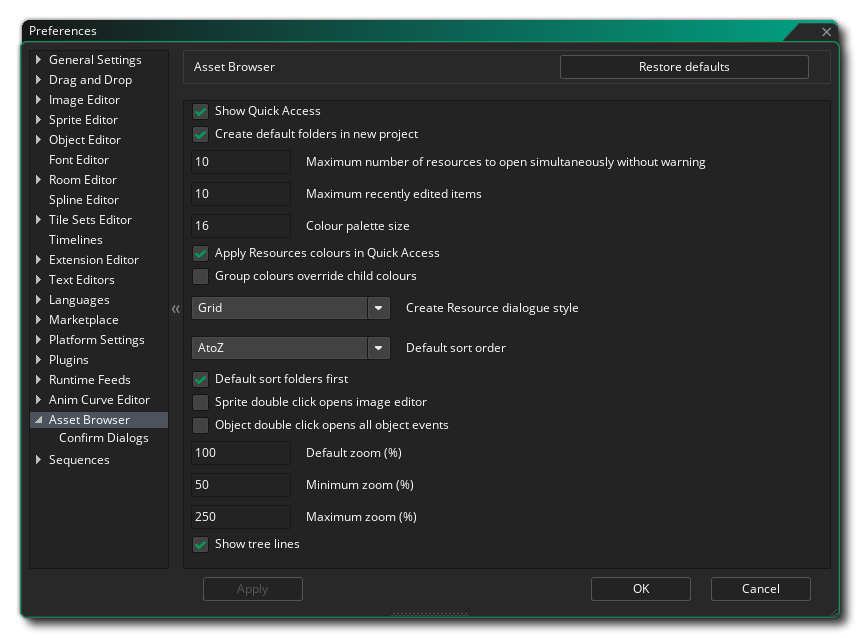
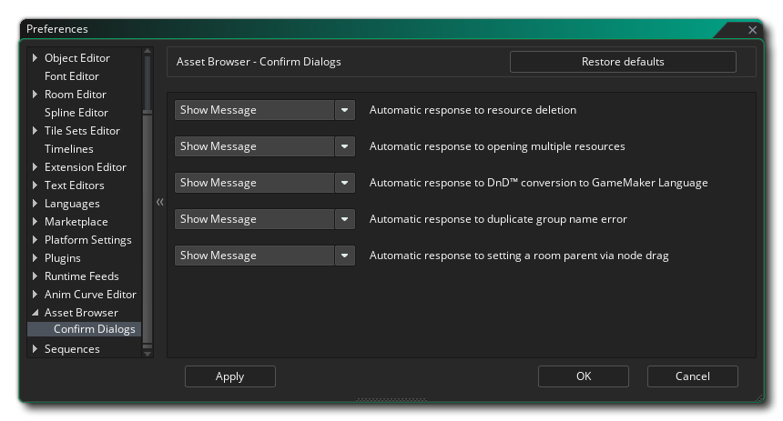

The Asset Browser Preferences are used to define certain properties for how the Asset Browser and its elements function. The main options are:
- Show Quick Access: When enabled, this option will show the "Quick Access" section at the top of the Asset Browser. This option is enabled by default.
- Create default folders in new project: When enabled, this option will have all new projects start with the default asset folders already created, and when disabled, only a room folder will be created with the default room required by all projects. This option is enabled by default.
- Maximum number of assets to open simultaneously without
warning: You can select multiple assets for opening at a time
by using
 /
/ +
+  to
select them and then right clicking
to
select them and then right clicking  and
choosing open all. If you have selected more than the number
specified in this option, then you will be shown a warning, since
having too many assets open at one time can cause issues with
performance on lower end machines. The default value is 10.
and
choosing open all. If you have selected more than the number
specified in this option, then you will be shown a warning, since
having too many assets open at one time can cause issues with
performance on lower end machines. The default value is 10.
- Maximum recently edited items: This setting governs the number of assets listed in the "Recent" section of the Asset Browser. The default value is 10.
- Colour Palette Size: Here you can set the number of colours available to you in the asset browser palette for asset groups. The default value is 16, with a minimum value of 16 and a maximum value of 100.
- Apply asset colours in Quick Access: When checked, this option will use the colours set for any given asset type to colour the asset in the Quick Access section of the browser. Unchecking this option will not use the asset colour. This is enabled by default.
- Group colours override child colours: When checked, this will use the top level group colour to colour any assets within the group, ignoring any colour that was set for the individual asset. This is disabled by default.
- Create asset dialogue style: When you click the "Add Asset" button in the Asset Browser, you will be presented with a window showing you the different assets that can be added to your project. This window can be presented in a list view or a grid view, and this setting governs which is shown by default. Default value is grid.
- Default sort order: This can be used to set the default sort order for assets in the browser, either alphabetical oder from A to Z or from Z to A. Default is from A to Z.
- Default sort folders first: When this is enabled, the asset browser will sort folders first, then any "loose" assets second, while if this is disabled then all assets and folders will be sorted together. This is enabled by default.
- Sprite double click opens image editor: By default
double clicking on any asset will open that asset
for editing, but often when dealing with sprites, after the initial
setup when you create the new asset, you open it to edit the image
rather than the sprite properties. Selecting this option will open
the image editor for the sprite asset instead of the sprite asset
itself. You can still open the sprite editor by right clicking
and selecting Edit. This
option is off by default.
- Object double click opens all object events: By default
double clicking on any asset will open that asset
for editing, but often when dealing with objects, after the initial
setup when you create the new asset, you open it to edit the events
only rather than the object properties. Selecting this option will
open the different object events in a new workspace, with each
event being given its own tab within the new workspace. You can
still open the object editor by right clicking and
selecting Edit. This option is off by default.
- Default zoom (%): This sets the default zoom percentage for the Asset Browser when you start a new project. The default value is 100%.
- Minimum zoom (%): This sets the minimum zoom value permitted for the Asset Browser. Default is 50%.
- Maximum zoom (%): This sets the maximum zoom value permitted for the Asset Browser. Default is 250%.
- Show tree lines: Here you can enable/disable the tree lines that are shown to the side of assets in the Asset Browser. This is checked by default to show the tree lines.
Here you can select the behaviour of the confirmation dialogs when working with an asset from the Asset Browser. The available options are:
- Automatic response to asset deletion: When you delete an asset from the Asset Browser you normally get a warning asking if you are sure you want to proceed. By setting this option to "OK" the message will be suppressed as if you had clicked the "OK" button to proceed. The default value is "Show Message".
- Automatic response to opening multiple assets: As mentioned above in the general Asset Browser preferences, when you open multiple assets at once from the Asset Browser, you can get a warning if the number exceeds the number specified. By setting this option to "OK" the warning will be suppressed as if you had clicked the "OK" button to proceed. The default value is "Show Message".
- Automatic response to DnD™ conversion to GameMaker Language: When you select the option to convert a DnD™ node to GML, you will be prompted to confirm the change as this cannot be undone. By setting this option to "OK" the warning will be suppressed as if you had clicked the "OK" button to proceed. The default value is "Show Message".
- Automatic response to duplicate group name error: When you create a group folder for organising your assets and name it the same as another folder in the browser, you will be shown a message asking if you wish to continue and have two folders with the same name. By setting this option to "OK" the warning will be suppressed as if you had clicked the "OK" button to proceed. The default value is "Show Message".
- Automatic response to setting a room parent via node drag: When you drag a room over another room in the Room Manager and then release it, you will be shown a message asking if you wish to make the room a "child" of the room being dropped on. By setting this option to "OK" the warning will be suppressed as if you had clicked the "OK" button to proceed. The default value is "Show Message".